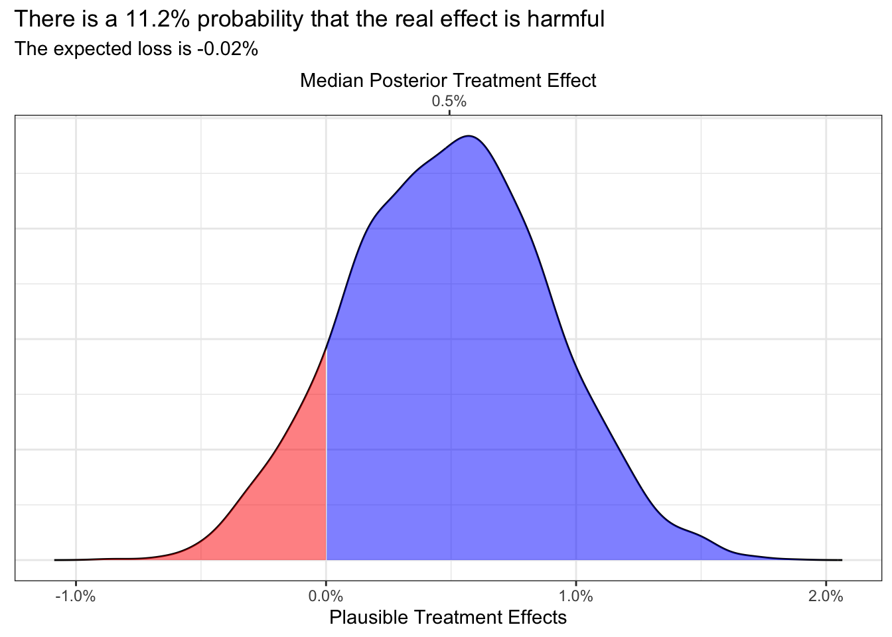

What can we say about this 1.38% treatment effect? Maybe we could explore the range of real effects that are likely to have produced our observed effect:
So we can see that the range of plausible treatment effects extends from about -2% to 4%, and we can eyeball that the 90% CI would extend from about 0.25 to 2.5%, which would mean that 0.25% is about as likely as 2.5% to be the true treatment effect. Pause, do you really believe that 2.5% is just as plausible as 0.25% to be the true effect? I don’t. In my experience 0.25% point effect are much more likely that 2.5% points effects.
We can and should leverage such knowledge about what effect sizes are likley by supplying our model with informed priors.
prior class coef group resp dpar nlpar lb ub
(flat) b
(flat) b recipeb
student_t(3, 0, 2.5) Intercept
source
default
(vectorized)
default
Fit a Model with Uninformed Priors
Since we’re predicting a binary outcome we’ll be using logistic regression, which will require our priors to be expressed in log odds ratios.
I often demonstrate uninformed priors in log odds of uniform(-5, 5) as this represents a belief that all rates between 1% and 99% are equally likely. It supplies practically no new information to the model.
dens <-density(df_post_uninformed$b_pr)df_fill_uninf <-tibble(x = dens$x, y = dens$y)my_breaks <-median(df_post_uninformed$b_pr)my_labels <-percent(my_breaks)df_fill_uninf |>ggplot(aes(x=x, y=y)) +geom_line() +geom_area(data =filter(df_fill_uninf, x >=0), fill ='blue', alpha=.5) +geom_area(data =filter(df_fill_uninf, x <0), fill ='red', alpha=.5) +scale_x_continuous(breaks =seq(-1, 1, .01),labels =~percent(.x,.1),sec.axis =dup_axis(breaks = my_breaks,name ="Median Posterior Treatment Effect")) +labs(y =NULL, x ="Plausible Treatment Effects", title =glue("There is a {percent(PR_LOSS,.1)} probability that the real effect is harmful"), subtitle =glue("The expected loss is {percent(E_LOSS,.01)}")) +theme(axis.ticks.y =element_blank(), axis.text.y =element_blank())
dens <-density(df_post_informed$b_pr)df_fill_inf <-tibble(x = dens$x, y = dens$y)my_breaks <-median(df_post_informed$b_pr)my_labels <-percent(my_breaks)df_fill_inf |>ggplot(aes(x=x, y=y)) +geom_line() +geom_area(data =filter(df_fill_inf, x >=0), fill ='blue', alpha=.5) +geom_area(data =filter(df_fill_inf, x <0), fill ='red', alpha=.5) +scale_x_continuous(breaks =seq(-1, 1, .01),labels =~percent(.x,.1),sec.axis =dup_axis(breaks = my_breaks,name ="Median Posterior Treatment Effect")) +labs(y =NULL, x ="Plausible Treatment Effects", title =glue("There is a {percent(PR_LOSS,.1)} probability that the real effect is harmful"), subtitle =glue("The expected loss is {percent(E_LOSS,.01)}")) +theme(axis.ticks.y =element_blank(), axis.text.y =element_blank())

Code
set.seed(42)df_prior <-tibble(x=rnorm(4e3, 0, .005))dens <-density(df_prior$x)df_prior <-tibble(x = dens$x, y = dens$y, distribution ="Prior of Normal(0, 0.5%)")
Below you can see how the Posterior with Normal(0, 0.5%) Prior combines information from the likelihood of the raw data and the Normal(0, 0.5%) Prior.